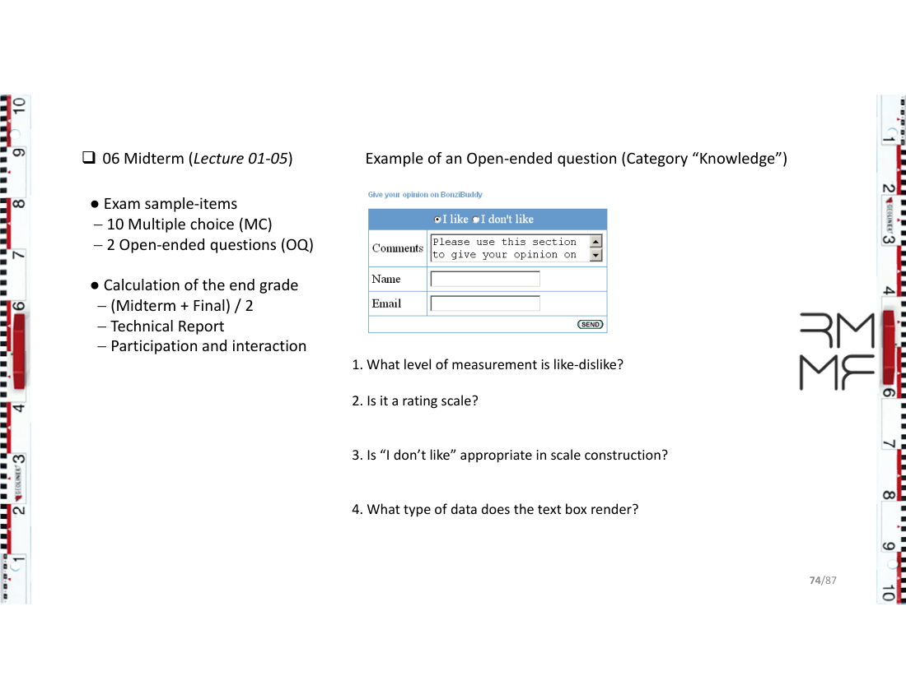
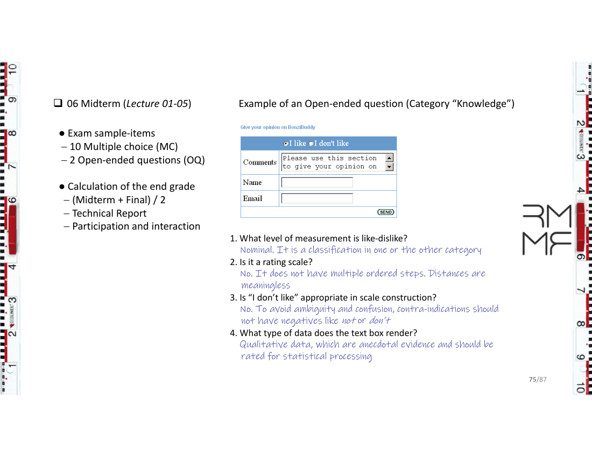
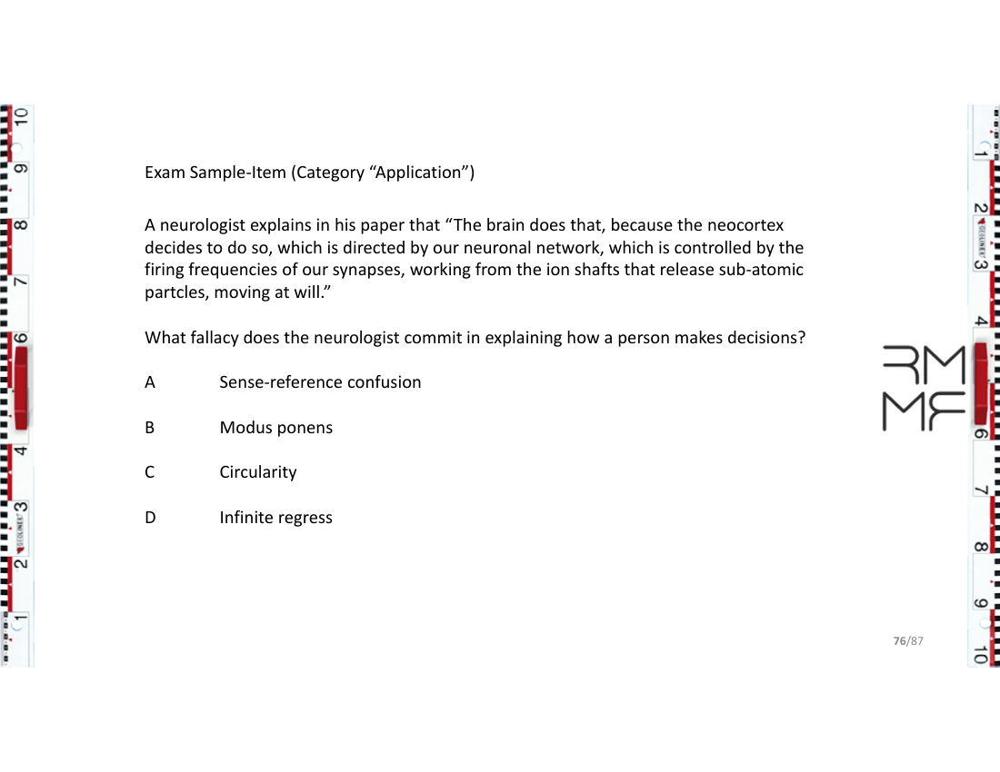
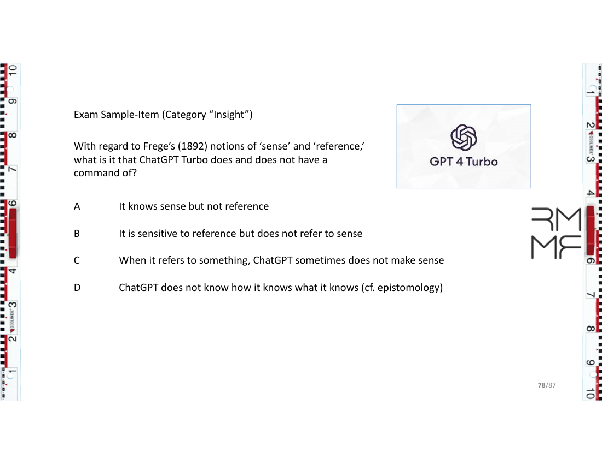
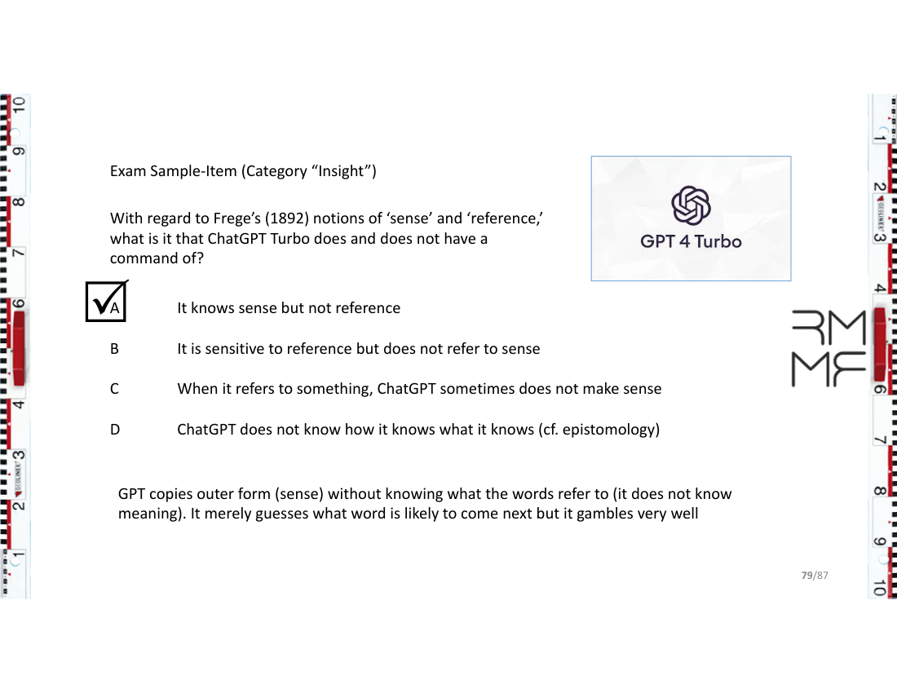
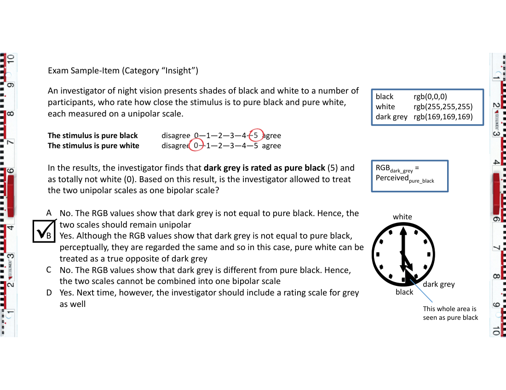

L04-E01 / Knowledge / 开放题
Like / dislike 的四个小问 
04 Σ SD5979 Structured questionnaire design 2026 09 18.pdf · PDF 第 74 页 · 点击放大 题干中文辅助（原译文） 06 期中考试（第 01-05 讲）
我的作答 加入错题
查看老师答案与逐项解释 / 来源 1 · 测量水平 Nominal：分到 like / dislike 类别。
2 · 是否为 rating scale？ 不是；没有多个有序等级，距离没有意义。
3 · I don’t like 是否合适？ 不合适；老师要求避免在反向题中使用 not / don’t，以减少混淆。
4 · 文本框是什么数据？ 定性、轶事性证据；若做统计处理，需进行评分。
以上短答是课件内容的中文整理；每一小问分别对应上面的证据页。原答案 / 延续页见下方。
老师原答案与题目延续 
04 Σ SD5979 Structured questionnaire design 2026 09 18.pdf · PDF 第 75 页 · 点击放大 L04-E02 / Application / 选择题
把“决定”不断向下一层推 
04 Σ SD5979 Structured questionnaire design 2026 09 18.pdf · PDF 第 76 页 · 点击放大 题干中文辅助（原译文） 一位神经学家在其论文中解释道：“大脑那样做，是因为新皮层
我的作答 A B C D 加入错题
查看老师答案与逐项解释 / 来源 老师答案 D 以原页勾选为准
以下为依据课件整理的逐项解释。未被选中不等于概念从未讲过；“无题设依据”也不等于全课未出现。
这些选项的概念，课件正文是否出现过？ 检索全部 903 页，排除已收录题目、答案页和可识别的样题 / 参考文献页。下列为按原词检索的出现记录，可能包含变体遗漏；出现不代表定义正确，也不代表考试重点。错项判定仍以逐项解释和老师答案为准。
Infinite regress 正文原词命中 9 页
老师原答案与题目延续 04 Σ SD5979 Structured questionnaire design 2026 09 18.pdf · PDF 第 77 页 · 点击放大 L04-E03 / Insight / 选择题
sense 与 reference 的课程区分 
04 Σ SD5979 Structured questionnaire design 2026 09 18.pdf · PDF 第 78 页 · 点击放大 题干中文辅助（原译文） A
我的作答 A B C D 加入错题
查看老师答案与逐项解释 / 来源 老师答案 A 以原页勾选为准
以下为依据课件整理的逐项解释。未被选中不等于概念从未讲过；“无题设依据”也不等于全课未出现。
这些选项的概念，课件正文是否出现过？ 检索全部 903 页，排除已收录题目、答案页和可识别的样题 / 参考文献页。下列为按原词检索的出现记录，可能包含变体遗漏；出现不代表定义正确，也不代表考试重点。错项判定仍以逐项解释和老师答案为准。
epistemology 未检出独立正文原词命中
这不证明概念从未以其他表达讲过；不把它直接当成该选项错误的理由。
老师原答案与题目延续 
04 Σ SD5979 Structured questionnaire design 2026 09 18.pdf · PDF 第 79 页 · 点击放大 L04-E04 / Insight / 选择题
两条单极量表何时能合并？ 04 Σ SD5979 Structured questionnaire design 2026 09 18.pdf · PDF 第 80 页 · 点击放大 题干中文辅助（原译文） 考试样题（类别 “洞察”）
我的作答 A B C D 加入错题
查看老师答案与逐项解释 / 来源 老师答案 B 以原页勾选为准
以下为依据课件整理的逐项解释。未被选中不等于概念从未讲过；“无题设依据”也不等于全课未出现。
这些选项的概念，课件正文是否出现过？ 检索全部 903 页，排除已收录题目、答案页和可识别的样题 / 参考文献页。下列为按原词检索的出现记录，可能包含变体遗漏；出现不代表定义正确，也不代表考试重点。错项判定仍以逐项解释和老师答案为准。
RGB 未检出独立正文原词命中
这不证明概念从未以其他表达讲过；不把它直接当成该选项错误的理由。
老师原答案与题目延续 
04 Σ SD5979 Structured questionnaire design 2026 09 18.pdf · PDF 第 81 页 · 点击放大 L04-E05 / Insight / 选择题
4 与 0：对比不等于正相反 04 Σ SD5979 Structured questionnaire design 2026 09 18.pdf · PDF 第 82 页 · 点击放大 题干中文辅助（原译文） 考试样题（类别 “洞察”）
我的作答 A B C D 加入错题
查看老师答案与逐项解释 / 来源 老师答案 C 以原页勾选为准
以下为依据课件整理的逐项解释。未被选中不等于概念从未讲过；“无题设依据”也不等于全课未出现。
这些选项的概念，课件正文是否出现过？ 检索全部 903 页，排除已收录题目、答案页和可识别的样题 / 参考文献页。下列为按原词检索的出现记录，可能包含变体遗漏；出现不代表定义正确，也不代表考试重点。错项判定仍以逐项解释和老师答案为准。
RGB 未检出独立正文原词命中
这不证明概念从未以其他表达讲过；不把它直接当成该选项错误的理由。
老师原答案与题目延续 04 Σ SD5979 Structured questionnaire design 2026 09 18.pdf · PDF 第 83 页 · 点击放大